Guiding Light
You're a lighthouse keeper and a courier… at once. Operate alone at the Pole of Cold, feed the penguins, guide the ships, and upgrade your lighthouse before the polar night claims you.
About the game
Guiding Light is a casual time-management game developed alongside its own game engine as part of coursework at the Lodz University of Technology. Set on a lonely arctic island, the player juggles the duties of a lighthouse keeper and a supply courier — rotating the lighthouse beam to steer ships away from rocks, picking up food deliveries, and keeping a colony of penguins fed, all while managing upgrades before the polar night rolls in.
The game was built over four months by a team of eight, including four programmers. I was the design lead of the project, I was the design lead for this project, from creating the initial idea, through iterating multiple prototypes, tweaking parameters, and finally reimplementing most of the gameplay from the prototype in our custom engine. The game won both the main Game Development category and the Activision special prize at ZTGK 2024 — a national Polish student game development competition.
Screenshots


The Engine
One of the great features of the Lodz University of Technology curriculum is that, during the sixth semester, students are organized into teams and undertake a semester-long project to develop their own game engine and build a game using it.
We've built our Engine from scratch in modern C++23. The architecture follows a Unity-style Object-Component model. The graphics API started as OpenGL but was ported to DirectX 11 early-development. A custom Python-based header tool — inspired by Unreal's UnrealHeaderTool — generates serialization and deserialization code for all components by parsing C++ headers automatically.
- 2D physics engine (collision detection & resolution)
- Runtime prefab loading
- UI system
- Scene and prefab editor
- Resource Manager (shared models & textures & shaders)
- Input and Event systems
- Custom EngineHeaderTool (Python, codegen)
- Shader hot-swapping
 Custom editor — gizmos, curve editors, debug drawings, and component inspectors.
Custom editor — gizmos, curve editors, debug drawings, and component inspectors.
Rendering
The renderer uses deferred shading for opaque geometry, switching to forward rendering for transparent objects and UI. A range of real-time rendering techniques were implemented to achieve the game's cold, moody arctic atmosphere.
- Gerstner wave water geometry
- Screen Space Reflections (SSR)
- Shadow mapping (point lights)
- Particle systems (CPU)
- Percentage-Closer Soft Shadows
- Volumetric light scattering
- Screen Space Refraction
- SSAO
- FXAA
- Deferred + forward hybrid pipeline
My Contributions
I was the lead designer on the project, but also served as a programmer, contributing to the engine, game systems, and gameplay. Most of the additions, systems, and tools I created arose from the need to use them as a designer and to reimplement gameplay from previously prepared prototypes in our engine.
Engine Programming
Engine Header Tool - A system inspired by Unreal's Unreal Header Tool, written in Python. This tool automatically creates editor, serialization, and deserialization code for components and their public variables. The script uses regex to detect, create, and remove appropriate code fragments. The automatically created code was backward compatible, meaning it ignored newly added variables during deserialization. The script runs every time the game project is built.
Paths and Curves - Data structures and tools for modifying them, inspired by similar tools from the GameMaker engine. These tools allow for convenient modification of points in a path or curve. They were used to define the paths along which ships were created in the game, the camera traversed when changing level, and the curves were used to scale the difficulty level, lighthouse development, and so on.
Level Creation Tools - They allow the creation of floes with different appearances but with sizes determined by the designer, as well as the automatic placement of objects marking the ends of the loading bay.
Tools and keyboard shortcuts to make using the editor easier:
- A system for assigning custom names to components (e.g. to distinguish several different curves in one object)
- F2 to rename
- ctrl+D to copy entity
- Del to delete entity
- automatic segregation of assets into tabs depending on type (models, textures, sounds, scenes, prefabs)
- Searching for components by name
- Controlling the camera
- LMB to load scenes and prefabs and ctrl+LMB to additively load
The foundations for the UI system.
Systems Programming
Generative system - It allows for the creation of events that spawns specific ships on maps, so that subsequent ship appearances are neither entirely random nor predictable, and each player has a unique, yet similar, planned experience. The designer can create pools and designate which ships will appear in a given pool, whether the pool will create them sequentially, randomly, or all at once. Additionally, when the system detects that a player is a few points short of the winning of the level, it spawns the calculated number of ships of the appropriate size to complete the level.
Ship AI system - A state machine that organizes the ships logic code into specific states: sailing forward, avoiding an obstacle, following the light, pirating, etc.
Tutorial event system - It allows to create stages that guide the player through the tutorial. The user assigns specific events for a given stage: dialogue, sound, prompt, creation of a specific ship, etc., as well as a condition for its fulfillment, such as collecting a specific cargo, entering a lighthouse, etc. The system checks whether the player has met the required condition and then proceeds to the next stage by activating the appropriate events.
Gameplay Programming
One of my main responsibilities was to reimplement the mechanisms I had previously created in the prototype on the GameMaker engine:
- The movement of the lighthouse keeper
- Ship Logic and Their Interaction with Light
- Ship spawning
- Collecting cargos
- Flash skill
- Upgrading the lighthouse
- Implementation of most models and textures
- etc.
Game Design
As a design lead, I was responsible for coming up with the game idea and core mechanics, implementing them through multiple prototypes, iterating on the ideas and mechanics multiple times, and responding to feedback.
Idea
The engine and game were developed during sixth semester of college. In addition to the technical requirements, there were also certain design constraints, including two randomly selected genres, three theme words, and a ban on shooting mechanics. The words and genres assigned to our team were:
- Owl (pl. Sowa)
- Wolf Pack (pl. Wataha)
- Courier (pl. Kurier)
- Tower Defense
- Pickup & Delivery
As with game jams, I began the process of analyzing the entries, listing all possible meanings, associations, and phraseological units, and in the case of genres, their characteristics and representatives. It was very difficult to find a common element upon which to build the gameplay. Fortunately, these entries were open to quite flexible interpretations, allowing me to form a specific idea:
A game in which you are a lighthouse keeper and guide ships safely across the river, and at the same time a postman and collect the delivered parcels.
The lighthouse keeper's job is some kind of tower defense, and the ships that pass by are our pack (seadogs, literally "sea wolves" in Polish). The owl is the weakest of the connections, but it was this word that originally drew me to the idea of a lighthouse, through one simple, foolish association: the lighthouse's light rotates in the same way an owl turns its head.
Prototypes
The first iterations of the prototype revealed some advantages and disadvantages of the original concept. Too much of the game was dedicated to land, and collecting packages from oncoming cars was largely separated from the gameplay of controlling ships. However, controlling ships using light was a lot of fun, while also being simple enough to give the player time to exit the lighthouse and act as a courier—what later turned out to be a key element of our game: time management.
 First prototype.
First prototype.
In the next two prototypes, I explored two approaches to focusing more of the action on the water. The first completely eliminated exiting the lighthouse, allowing ships to approach from any direction, seemingly intended to increase interaction with ships. The second expanded the water area, but shifted courier interactions to collecting goods from ships. This is much closer to the previous version and naturally developed the concept further.
 Open sea prototype.
Open sea prototype.
 Ships with cargo prototype.
Ships with cargo prototype.
It turned out that the version where you had to navigate ships on the open sea had a significant problem with balance. The ships required much more attention than in the second variant because they had to make larger turns. With fewer ships, the game became quite boring, and with more, it quickly became overwhelming. The second variant gained where the first one fails. If the player had set the ships on the right course, they could easily exit the lighthouse and take care of their courier duties. When more ships appeared, they had to rush to the lighthouse to save the day. This made me realize the most important change in approach to thinking about this game:
The player is not supposed to guide the ships, but only to guide them on the right course.
Subsequent prototypes built on this idea, adding mechanics and interactions that the lighthouse keeper could perform outside the lighthouse. Although I was quite satisfied with the resulting design, our team still encountered negative feedback. In an attempt to address this, I created further prototypes, often with radically different mechanics. However, these were also not well-received. Artur Ganszyniec, teacher of "Story Design in Computer Games" course suggested that the negative feedback might stem not from the bad design, but from the game looking bad. However, no one included this in their feedback because they knew it was just a prototype, so they were convinced the problem lay elsewhere. So the final step before moving the game to our own engine was to create a "Beautiful" prototype.
 "Ugly" prototype.
"Ugly" prototype.
To our surprise, a prototype featuring the exact same mechanics and design with slightly tweaked graphics received positive feedback from the same testers who had previously expressed criticism. Funnily enough, some of them saw improvements in the ship control parameters, when, of course, no such change occurred.
Guiding by Light
Controlling ships is more complex than it might initially seem. Depending on the distance of the light from the ship, it can be slowed or sped up, allowing player to change the turning arc and get out of many sticky situations between multiple ships.
Barely made it
When implementing the game on our engine, we incorporated a generative system that allows for a specific experience in each level. The system allows for setting specific pools of ships that will appear on a given map. Because pools appear randomly, it's impossible to predict the entire course of the map, and each player will experience the same events, such as the arrival of three cargo ships, one large food ship, and two pirates, etc.
However, one of the most important elements of this system are the last-chance ships. During playtests, I noticed that players at the end of the level would sometimes give up before the timer ran out. This was because they saw how many points they were lacking, but no ships were available that could deliver that much. However, when a ship that perfectly met the requirements appeared, the fight continued until the very end, generating intense emotions. I decided we couldn't count on such a fate and we need to help it a little. The generative system checks the player's missing points at the appropriate moment before the timer runs out. If the missing points are less than the specified value for a given map, the system will spawn the appropriate number of ships that meet the required points. Furthermore, these ships are selected to minimize their number:
e.g. When a player is short of 7 points, the system will spawn:
1 ship x 5 points + 1 ship x 3 points (2 ships),
instead of
7 ships x 1 point (7 ships)
or
2 ships x 3 points + 1 ship x 1 point (3 ships)
When implementing the ship AI system in the engine, I added a state where ships attempt to slow down and turn slightly before crashing into an iceberg. In the prototypes, non-pirate ships, not controlled by the player, mindlessly sailed forward regardless of what was there. Introducing such a subtle change not only created the feeling that someone was actually on board the ship but also gave players those extra few milliseconds to salvage the situation, again creating the feeling of barely making it.
Eureka moment!
Once the lighthouse keeper goes outside, he must collect packages to gain points and resources that can be used to purchase upgrades. He can also interact directly with ships, which will destroy them. This serves a dual purpose: firstly, the player cannot mindlessly navigate the river, as this could destroy the ships they care about. Secondly, the first time this happens, the player has an "Eureka!" moment, realizing that this is also a method for destroying pirate ships. This, among other things, makes leaving the lighthouse not only a chore that requires careful timing, but also an additional tool for managing the situation on the river.
To avoid moments of frustration, ships in the bay cannot be destroyed by the lighthouse keeper crashing into them, which would otherwise happen quite often, even by accident, because both ships and the lighthouse keeper must be in the exact same area. And if a ship in the bay begins to sink because another ship hits it, the player can still retrieve cargo from it until it has completely sunk, which also prevents unnecessary frustration.
 Destroying pirates and taking cargo from destroyed ship.
Destroying pirates and taking cargo from destroyed ship.
Level Design
Guiding Light has six levels. Levels 1-3 serve as a tutorial. Levels 4-6 are full-fledged maps, with levels 4 and 5 already existing when the game was in its prototype stage, and level 6 was designed in-game using our engine.
Levels 1-3 — Tutorial
As I mentioned, levels 1-3 serve as a tutorial, and their layout is the result of close cooperation with Michał Galiński and his tutorial scenario, which you can read more about on his blog. The maps had to be appropriately shaped to teach and demonstrate specific mechanics.
The first level teaches our main mechanics: ship control itself, so it's simply a sharp turn that can't be bypassed accidentally or by just slightly steering the ship (red line). However, in this layout, I've added a much faster route for someone who's played through the game a few times and wants to move on to the next maps as quickly as possible (green line). It requires a level of precision I wouldn't expect from someone playing for the first time, and even if they managed to complete the level this way, I'd still be confident they'd understand how ships are controlled in our game.
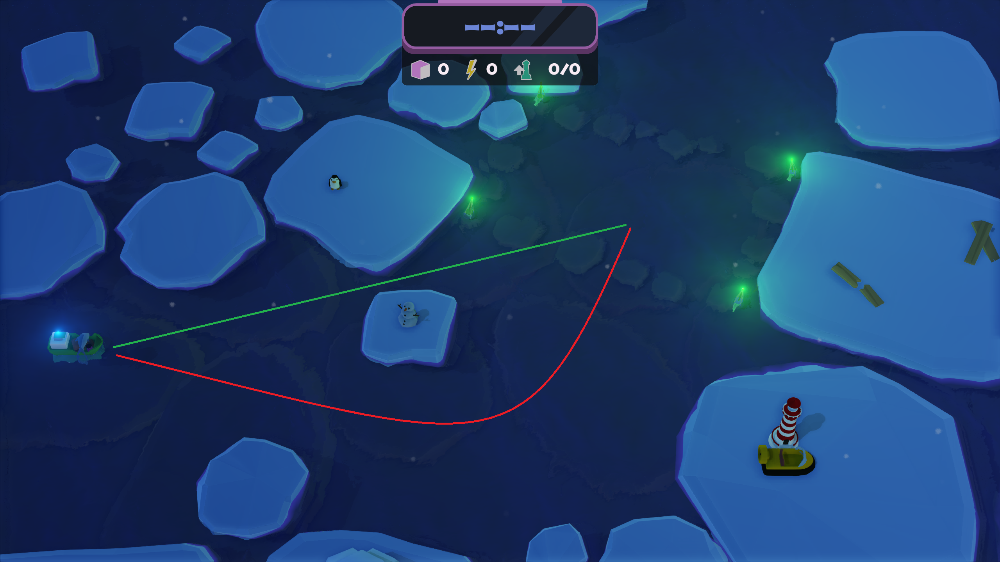
Level 1The second level teaches the player, among other things, how to use the flash, an action that momentarily stops all ships. This skill is useful in a game where there are a lot of ships and the player wants to save the day or even turn certain ships around. However, creating such a chaotic situation in a level intended to teach the use of such mechanics would be excruciatingly difficult and, moreover, very confusing for the player. Therefore, this map features a narrow passage that requires a relatively long ship to fit through. Of course, a skilled player can guide a ship through this passage without the flash, but this cannot be done accidentally. If I wanted to make the passage even tighter so that the flash was required, navigating this section would be just as difficult with it.
Additionally, this map shows the player that water is not a boundary for him and that as a lighthouse keeper he can cross it.
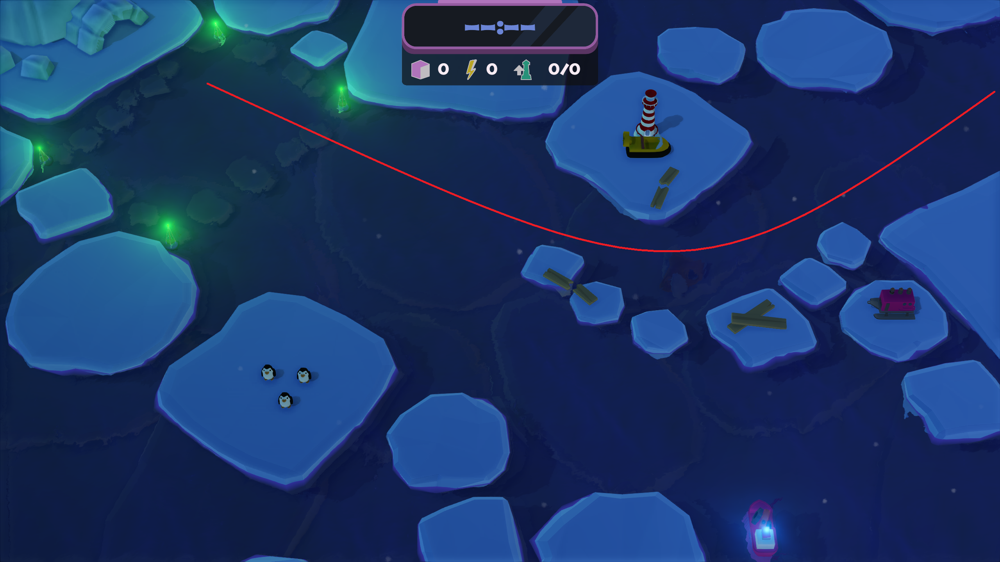
Level 2 — Ships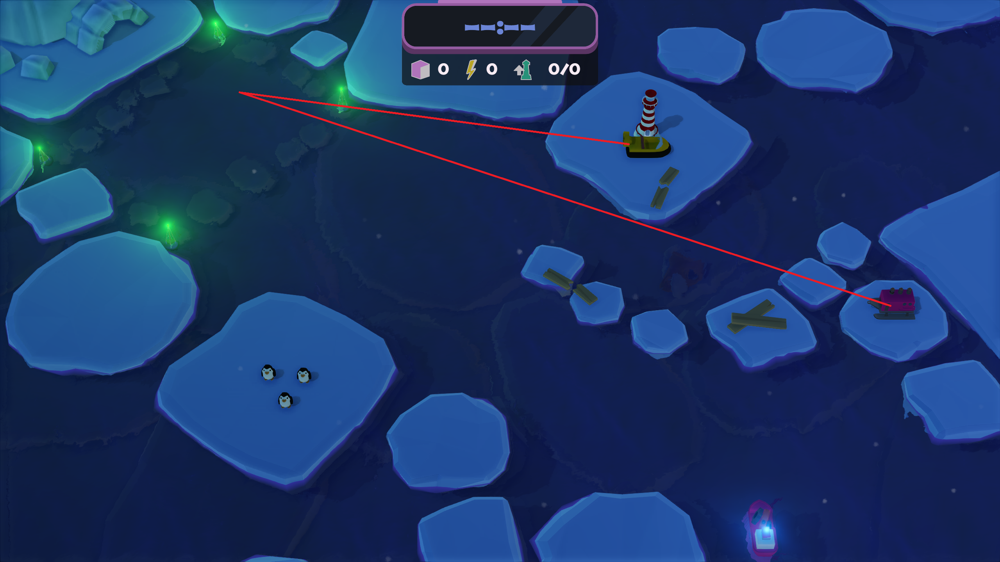
Level 2 — KeeperThe third level introduces the remaining mechanisms needed for a full gameplay loop, so the map resembles a full-fledged level.
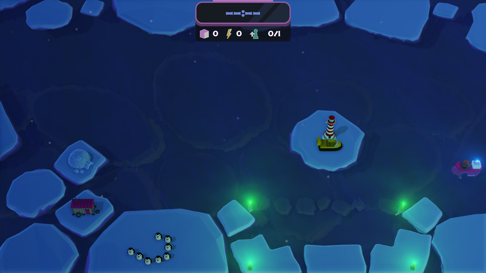
Level 3The layout of this level differs from the next one, including a noticeable narrowing on the left side. This is because each map is a continuation of the same river, creating one cohesive whole.
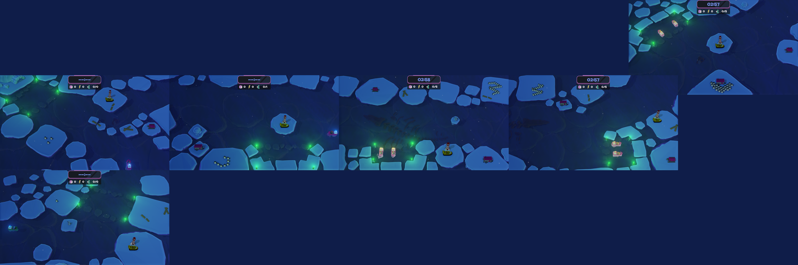
All LevelsLevels 4 — River
Level four is a layout that has been present almost since the first prototype. The river is positioned so that all ships sailing from the left side can be directed into the bay from the very beginning. Ships sailing from the right side require the player's attention in two stages: before the obstacle, to avoid it, and then directly into the bay.
The objects set for interaction for the lighthouse keeper are placed specifically to motivate the player to cross the river to the other side and to place the lighthouse approximately between the three points of interest.
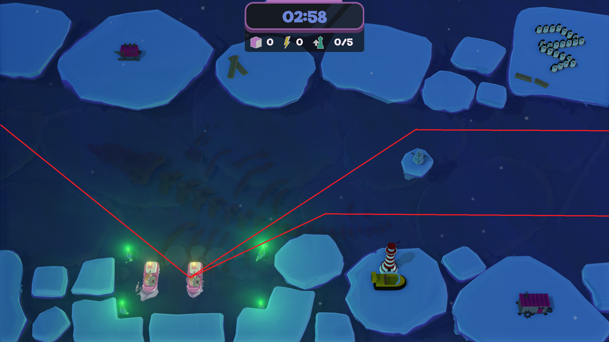
Level 4 — Ships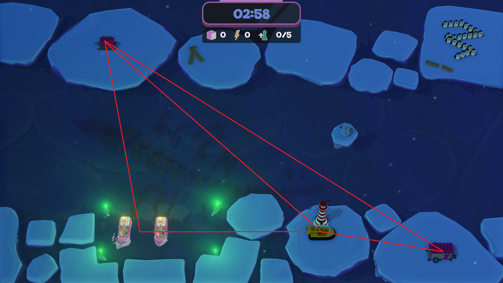
Level 4 — KeeperLevels 5 — Turn
Level five was also present early in the project's development and represents a natural increase in difficulty. Once again, ships sailing from the left side sail directly into the bay. Ships sailing from the right side require much more attention from the player, as they must be turned around. This introduces a situation where the player sometimes has to make a difficult decision and abandon certain ships rather than attempt to turn them around. The flash ability is also much more important on this map, allowing multiple ships to be turned around at the right moment.
On this map, the lighthouse is much further away from the other objects than in the previous level. There's still one object across the river, but it's a different upgrade than in the previous level to prevent the player from constantly using the same tactic.
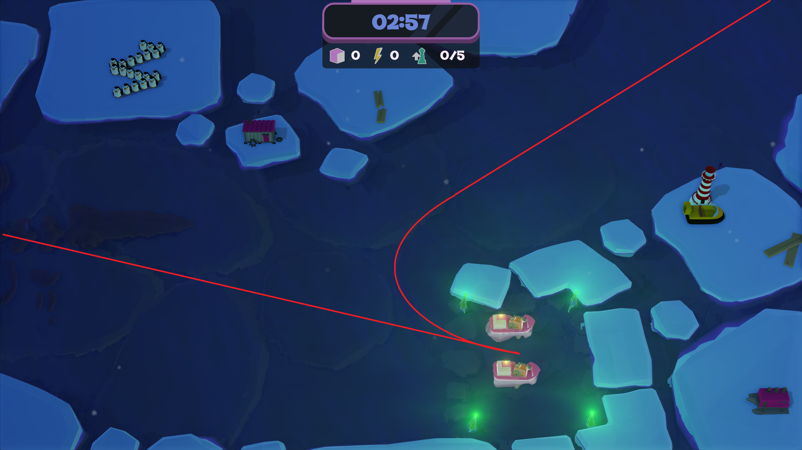
Level 5 — Ships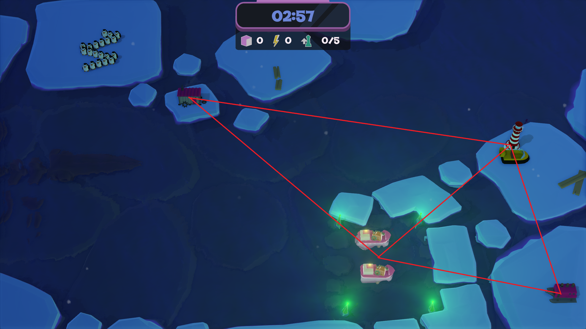
Level 5 — KeeperLevels 6 — Crossroad
Level six adds a third side where ships come from, with each side having a different level of attention required.
In this map, all interactive objects for the lighthouse keeper require crossing the river, and this is in places where there are often many ships.
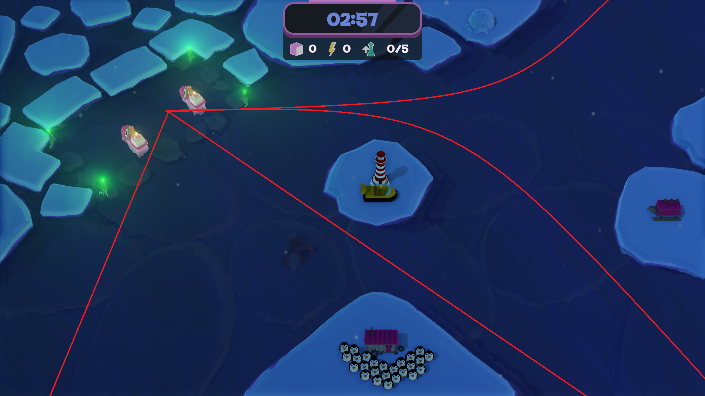
Level 6 — Ships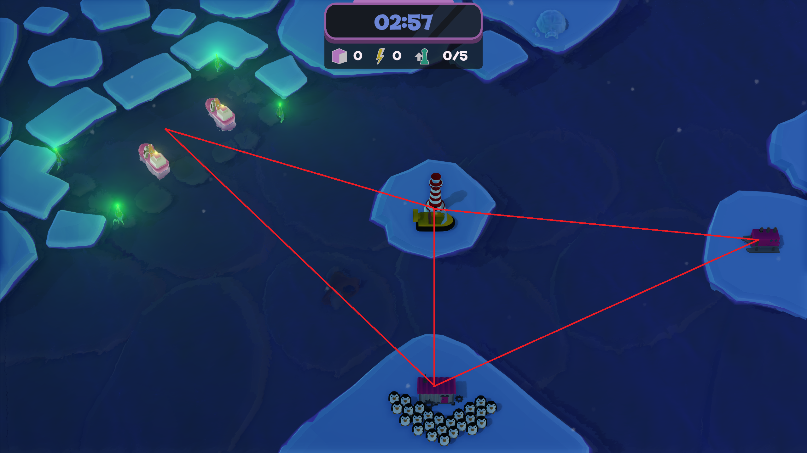
Level 6 — KeeperMore levels
These were all the levels I created for this game. I believe I utilized the mechanics to their full potential in terms of level design, and if I were to expand upon them, creating additional levels would require expanding the game with additional mechanics. Despite this, several ideas emerged during development that I would incorporate into the level design in future production:
- Two lighthouses
- Double-sided bay
- H-shaped
I also contributed to: Engine Prog. Systems Prog. Gameplay Prog. — to learn more switch to Programming
I also contributed to: Game Design Level Design — to learn more switch to Design
Credits
| Miłosz Kawczyński | Design Lead |
| Michał Galiński | Production Lead |
| Jakub Januszewicz | 2D & Branding Lead |
| Nadia Kowalska | 3D Art Lead |
| Hubert Olejnik | Rendering Lead |
| Mikołaj Przybylski | Engine Programming Lead |
| Julian Rakowski | Voice Acting |
| Michał Świstak | Sound Design |